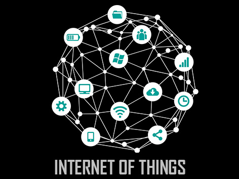

Internet of Things or IoT in short, is the idea of making devices and objects smarter by linking them to the internet. With IoT, you can have a fridge notify you when there's no milk. IoT has promising applications for smart homes, wearable devices, smart cities, connected cars and more. This workshop introduces you to the amazing world of IoT and its fascinating applications, using an Arduino computer. Apart from gaining practical skills on the Internet of Things, by doing this workshop you will learn about the Arduino development platform which is popular among people who love innovative projects.
Fees: Rs.5000 /- per Group
• 5 members per group
• 1 laptop per group with internet facility
• Free IOT Kits in a group of 5
• All Engineering/Diploma & MCA students can participate
Workshop Benefits & Highlights:
• Learn & Interact with Engineer Trainer & get to know about IOT,Arduino, Sensors & All.
• Receive an unparalleled education on the art of building robots & applications with personal one – on – one attention.
• Learn to make your own application within 2 day’s.
• Power Point Presentation, Live Demos, Interactive Questions & Answer session & comprehensive material.
Event Head :Mohit Partani(9405919281)
Event Co-Head :Aishwarya Shrivastava(7775094699)
Committee Members :
Arpit Verma(8446485939)
Ninad Paigan(8446575431)
• Date- 1st and 2nd March 2017
• Duration – 8hrs
• Time – 8:30 am onwards (1hr break)
• Venue- EN Seminar Hall
• Amount – 5000 Rs
Terms and Condition
It is expected that the expenses of the following particulars will be undertaken by TECHNOVISION 10.0 Event Central Committee:
1. Refreshments for participants and guests.
2. Certificates for participants and organizing committee.
3. Posters for publicity of workshop
4. Arrangement of a Projector